第 7 讲：游戏引擎中的渲染——后处理与渲染管线
从环境光遮蔽、雾、抗锯齿到后处理与渲染管线，串起一帧画面的完整组装流程
◆ 学完这一讲，你应该能
理解环境光遮蔽（AO）的原理与屏幕空间近似方法（SSAO/HBAO/GTAO）
掌握雾效（深度雾、高度雾、体积雾）的计算模型与适用场景
理解抗锯齿的成因与主流方案（SSAA/MSAA/FXAA/TAA）的取舍
掌握后处理核心效果：Bloom、Tone Mapping、Color Grading 的实现思路
理解前向渲染、延迟渲染、Tile-based 渲染的流程与优缺点
了解 Frame Graph 与显示同步（垂直同步/可变刷新率）的工程意义
核心结论速记
AO 是环境光被遮挡的近似，屏幕空间方法用深度缓冲估计可见性，成本低但有局限。
雾效不仅是氛围，还能表达深度；高度雾沿视线积分，体积雾用体素近似。
抗锯齿本质是采样不足导致的高频走样；SSAA/MSAA 靠增加采样，FXAA 靠图像分析，TAA 靠时间累积。
Bloom 模拟镜头的光晕，通过阈值提取、高斯模糊、金字塔降采样再合成。
Tone Mapping 把 HDR 映射到 SDR，ACES 是电影级曲线；Color Grading 用 LUT 做风格化调色。
前向渲染每物体每光源计算，延迟渲染先写 G-Buffer 再统一着色，Tile-based 按屏幕分块剔除光源。
现代管线用 Frame Graph 管理 Pass 与资源依赖，用垂直同步/可变刷新率解决画面撕裂。
011. 环境光遮蔽：让角落暗下来
环境光遮蔽（Ambient Occlusion, AO）用来近似环境光在物体表面被周围几何体遮挡而衰减的效果。直觉上，墙角、缝隙、物体接触处接收到的环境光更少，所以更暗。
AO 的数学定义是可见性函数沿法线半球积分： \[ A(p) = \frac{1}{\pi} \int_{\Omega} V(p,\omega) (n \cdot \omega) \, d\omega \] 其中 \(V\) 是可见性（0 或 1），\(n\) 是法线，\(\omega\) 是半球方向。实际计算常用近似：在半球内采样若干方向，统计可见比例。
预计算 AO：离线用光线追踪计算 AO 并烘焙到纹理（AO Map），优点是运行时零成本，缺点是额外存储、只适用于静态物体。
屏幕空间 AO（SSAO）：在视空间以每个像素为中心生成随机采样点，用深度缓冲比较采样点是否被遮挡，平均可见性得到 AO。SSAO 只依赖深度缓冲，实时性好，但只能捕捉屏幕空间内的遮挡，屏幕外或背后的几何体无法贡献，且会有噪声和 halo 伪影。
SSAO+：注意到 AO 积分实际是在法线朝向的半球上，SSAO+ 用半球采样代替全球采样，减少采样数并提升质量。
HBAO（Horizon-Based AO）：把深度缓冲当作高度场，在 2D 平面上沿多个方向步进，找到最大水平角（horizon angle），低于水平角的方向被遮挡。通过随机抖动步长和旋转方向来减少带状伪影。
GTAO（Ground Truth AO）：在 HBAO 基础上补上缺失的余弦因子，去掉衰减函数，并加入多次反弹的快速近似（按 albedo 拟合三次多项式）。
光线追踪 AO：用硬件光追从屏幕像素发射光线，少量 spp 就能处理远距离遮挡，增加 spp 可恢复接触区域的细节。
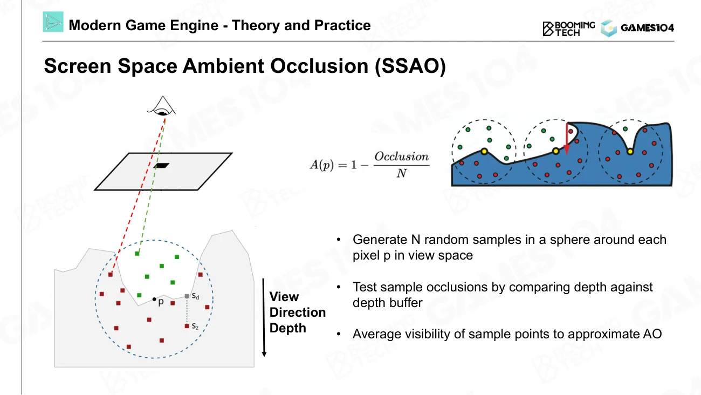
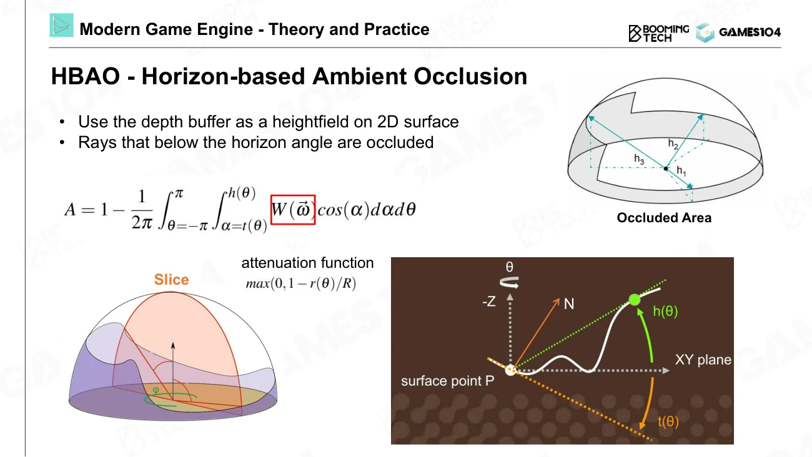
补充说明
AO 通常只影响环境光项，不直接影响直接光照。
常见坑
SSAO 出现明显噪点或闪烁 → 采样数不足或随机种子每帧变化 → 增加采样数、使用蓝噪声并做模糊。
SSAO 在物体边缘出现亮边（halo） → 深度比较阈值不当或法线重建错误 → 调整 bias，检查法线是否从深度正确重建。
AO 过强导致画面脏 → AO 强度或半径设置过大 → 降低强度，按场景尺度调整半径。
UE / Unity 落地
UE：后处理体积中可开启 SSAO，调整强度、半径、对比度；Lumen 提供基于距离场的 AO。
Unity：URP/HDRP 的 SSAO 渲染器特性，可调强度、半径、采样数。
022. 雾效：深度、高度与体积
雾效（Fog）在游戏中不仅营造氛围，还用来表达距离感、遮蔽远处细节（配合 LOD）。
深度雾（Depth Fog）：根据像素到相机的距离 \(z\) 计算雾因子，再与雾颜色混合。常见三种曲线：
- 线性雾：\( f = \frac{end - z}{end - start} \)
- 指数雾：\( f = \exp(-density \cdot z) \)
- 指数平方雾：\( f = \exp(-(density \cdot z)^2) \)
其中 \(f\) 是雾的浓度（0 表示无雾，1 表示全雾），最终颜色 = 原色 \(\times (1-f)\) + 雾色 \(\times f\)。
高度雾（Height Fog）：雾密度随高度变化，通常在地面附近更浓。计算时需要沿视线方向对密度积分，得到光学厚度，再转换为透射率。
体积雾（Volumetric Fog）：用体素（3D 纹理）表示空间中的雾密度，结合光照计算散射，能产生光柱、体积阴影等效果，成本较高。
工程上，雾效通常在后处理阶段或单独 Pass 中完成，深度雾最简单，高度雾和体积雾更真实但更贵。
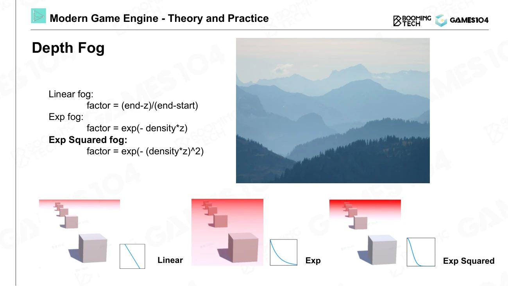
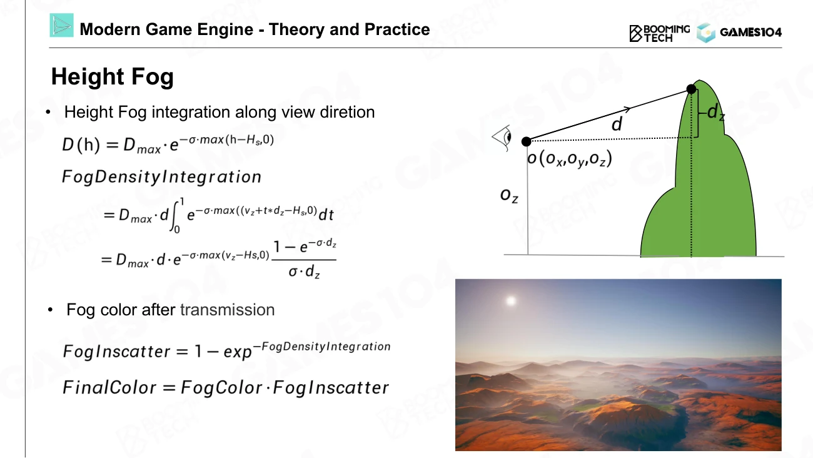
常见坑
雾效在天空盒上出现明显分界 → 雾只应用于不透明物体，天空盒未处理 → 对天空盒也应用雾或使用大气散射。
指数雾参数 density 过大导致远处全白 → 单位不统一 → 确认 distance 单位（米/厘米）与 density 匹配。
UE / Unity 落地
UE：指数高度雾（Exponential Height Fog）组件，可设置密度、高度衰减、雾颜色。
Unity： Lighting 设置中的 Fog，或使用后期处理 Volume 中的雾效。
033. 抗锯齿：从采样不足到时间累积
走样（Aliasing）是高频信号在有限分辨率下采样不足产生的 artifacts，表现为锯齿边缘、纹理闪烁、高光闪烁。
抗锯齿的通用策略：用某种采样模式获取更多样本，加权求和得到像素颜色。
SSAA（超采样抗锯齿）：以更高分辨率渲染再降采样，最简单但成本高（4x 分辨率意味着 4x 像素着色）。
MSAA（多重采样抗锯齿）：只对边缘像素进行多采样，像素着色仍按每像素一次，成本低于 SSAA，但需要硬件支持，且对延迟渲染不友好。
FXAA（快速近似抗锯齿）：基于 1x 渲染图像，通过亮度检测边缘，计算偏移量，再重采样边缘像素与邻居混合。纯后处理，成本低，但会模糊细节。
TAA（时间抗锯齿）：利用前一帧的历史颜色，结合运动向量重投影，将当前帧与历史帧混合。需要抖动投影矩阵（jitter）来增加采样。TAA 能显著提升稳定性，但可能产生鬼影（ghosting），需要用颜色包围盒裁剪历史颜色。
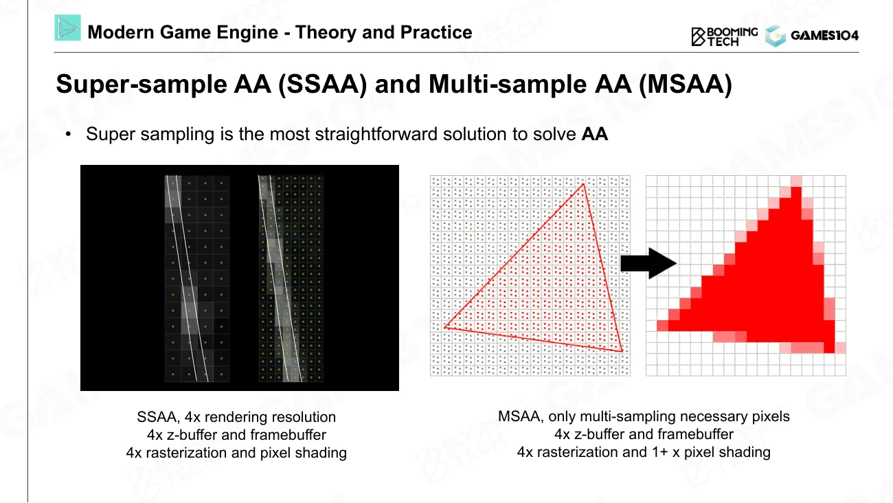
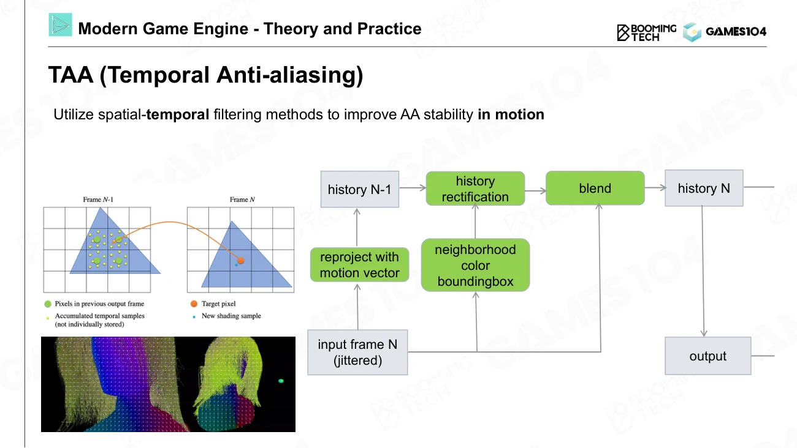
补充说明
TAA 需要每帧抖动相机投影矩阵，并在解析时使用运动向量。
常见坑
TAA 出现鬼影 → 运动向量错误或历史颜色未裁剪 → 检查运动向量生成，启用邻域裁剪。
FXAA 使文字模糊 → 边缘检测阈值过低 → 提高阈值或改用 TAA。
MSAA 在延迟渲染中无效 → 延迟渲染的 G-Buffer 不支持 MSAA → 改用 TAA 或后处理 AA。
UE / Unity 落地
UE：项目设置中可选 Anti-Aliasing Method（FXAA/TAA/TSR）。
Unity：URP 中可选 FXAA、SMAA、TAA（需要开启 Motion Vector）。
044. 后处理：Bloom、色调映射与调色
后处理（Post-processing）是对最终图像应用的算法，用于风格化（调色、对比度）或真实感（色调映射、景深）。
Bloom：模拟镜头的光晕。物理基础是镜头无法完美聚焦，点光源会形成艾里斑（Airy Disk）。实现步骤：
- 阈值提取亮部（亮度超过阈值）。
- 高斯模糊（可分离卷积，先水平后垂直）。
- 金字塔模糊：降采样+模糊+升采样，多尺度叠加，成本低且效果柔和。
- 与原图合成。
Tone Mapping：HDR 颜色范围远超 SDR 显示器，需要映射。常用曲线有 Reinhard、ACES 等。ACES（Academy Color Encoding System）提供电影级观感，保持对比度并平滑高光过渡。
Color Grading：调整颜色风格，常用 LUT（查找表）。LUT 将输入颜色映射到输出颜色，可视为颜色预设。3D LUT 可沿蓝轴切片为 2D 纹理。
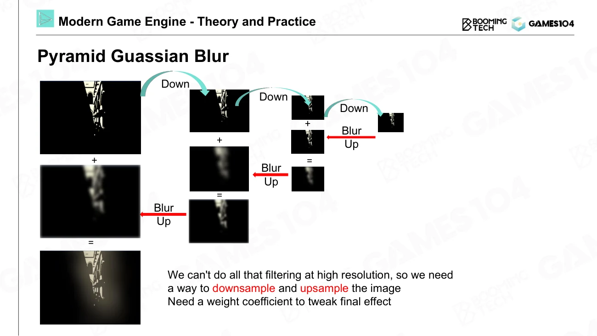
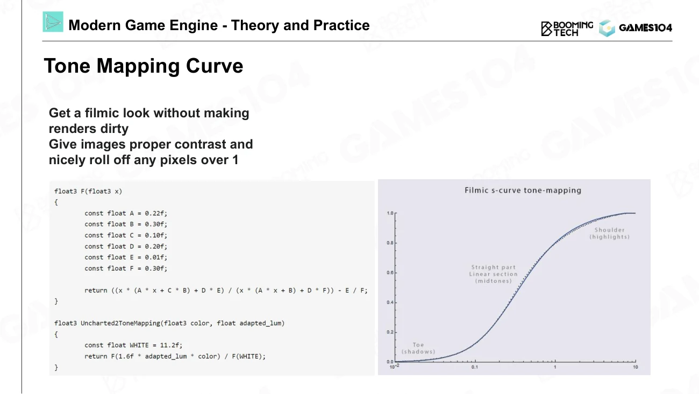
补充说明
Bloom 通常在 HDR 空间计算，最后与色调映射一起输出。
常见坑
Bloom 过曝或全屏发光 → 阈值过低或强度过高 → 调整阈值和强度。
Tone Mapping 后画面灰暗 → 未正确设置曝光或曲线 → 调整曝光补偿，检查是否在线性空间操作。
LUT 调色后颜色偏差 → LUT 纹理未设置为 sRGB 或未在线性空间采样 → 检查纹理导入设置和采样色彩空间。
UE / Unity 落地
UE：后处理体积中可调 Bloom、曝光、色调映射（ACES）、颜色分级（LUT）。
Unity：Post-processing Stack 或 URP Volume 中的 Bloom、Tonemapping、Color Grading。
055. 渲染管线：前向、延迟与 Tile-based
渲染管线（Rendering Pipeline）管理所有渲染操作的执行顺序和资源分配。
前向渲染（Forward Rendering）：对每个物体、每个光源计算着色，累加到颜色缓冲。简单，支持透明和 MSAA，但光源多时开销大（每物体每光源）。
延迟渲染（Deferred Rendering）：先渲染 G-Buffer（位置、法线、albedo 等），再在屏幕空间统一计算光照。优点：只对可见像素计算光照，G-Buffer 可用于后处理。缺点：内存带宽高（1920x1080 的 G-Buffer 约 63MB），不支持透明物体，MSAA 不友好。
Tile-based 渲染：将屏幕划分为 tile（如 16x16），对每个 tile 做光源剔除，得到光源列表，再在着色时只遍历该列表。可结合深度预通道（Pre-Z）进一步优化。
Forward+（Tile-based Forward）：深度预通道 + tile 光源剔除 + 每物体着色时遍历光源列表。结合了前向和延迟的优点。
Cluster-based 渲染：在 3D 空间划分 cluster，更精确的光源剔除。
Visibility Buffer：只写可见性信息（三角形 ID 等），延迟着色时再取几何数据，减少 G-Buffer 带宽。
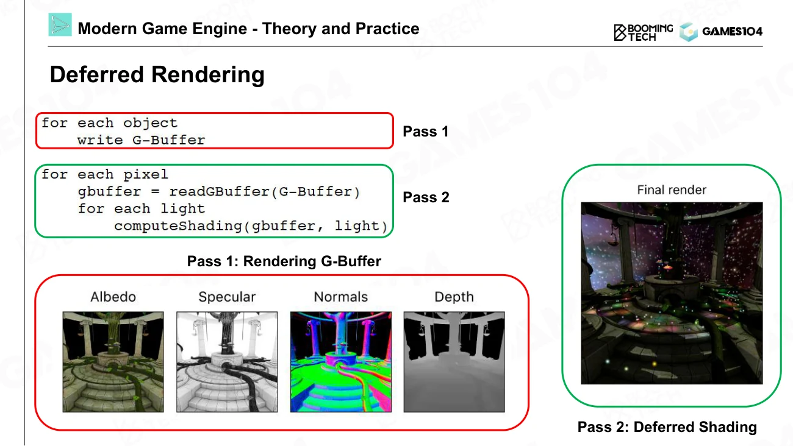
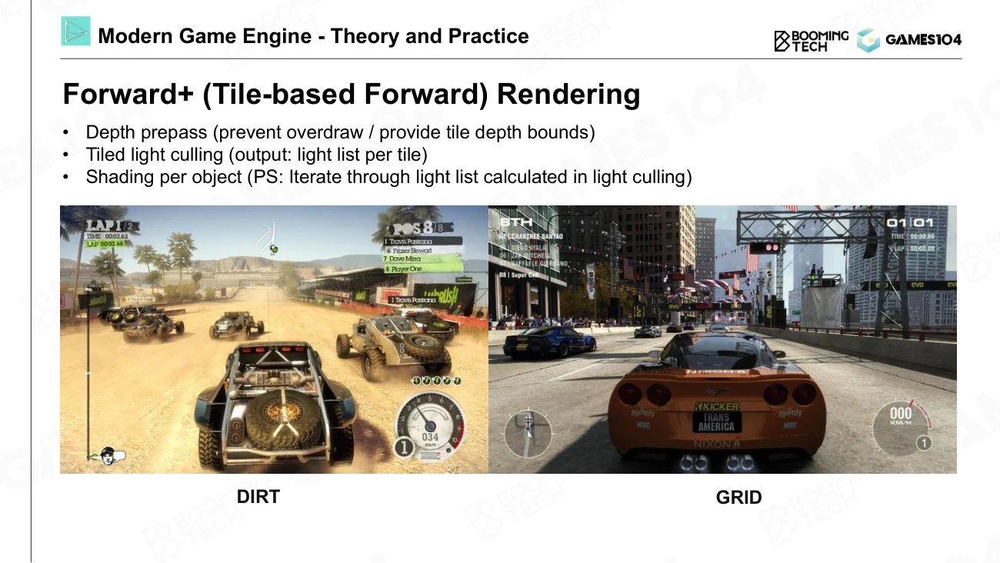
常见坑
延迟渲染下透明物体消失 → 延迟管线不支持透明 → 透明物体用前向单独渲染。
Tile-based 光源剔除后仍有漏光 → 光源包围体与 tile 深度范围测试不准确 → 检查光源包围体和深度范围。
G-Buffer 内存过大 → 格式过多或精度过高 → 压缩 G-Buffer 格式。
UE / Unity 落地
UE：默认延迟渲染，支持前向渲染（用于透明和特殊材质）。
Unity：URP 前向渲染，HDRP 支持延迟渲染。
066. 真实管线与显示同步
真实渲染管线面临复杂并行工作同步、大量瞬态资源（生命周期短于一帧）、资源状态管理等挑战。
Frame Graph：用有向无环图（DAG）描述一帧内 Pass 与资源的依赖关系，自动管理资源生命周期和状态转换，优化内存和同步。
显示同步：GPU 帧率波动会导致画面撕裂（Screen Tearing），即新帧在上一个屏幕帧中间更新。垂直同步（V-Sync）将缓冲交换与显示器刷新同步，避免撕裂但增加延迟、降低帧率。可变刷新率（Variable Refresh Rate, VRR）如 G-Sync/FreeSync 动态调整刷新率，兼顾流畅与无撕裂。
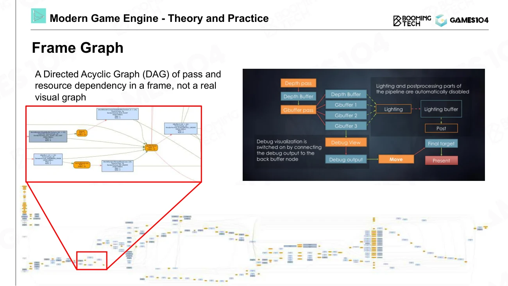
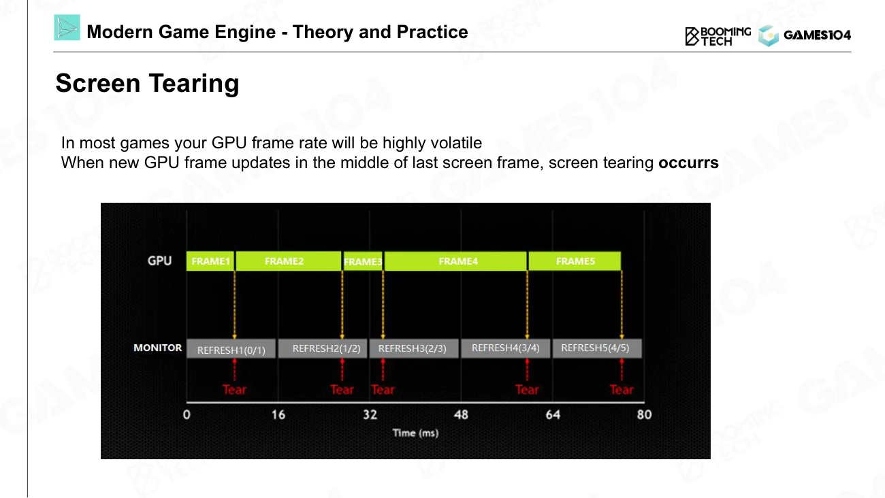
常见坑
开启垂直同步后输入延迟明显 → V-Sync 增加缓冲 → 使用可变刷新率或关闭 V-Sync 并限制帧率。
Frame Graph 资源复用导致数据竞争 → 资源生命周期分析错误 → 检查 Pass 依赖和资源状态转换。
UE / Unity 落地
UE：RDG（Render Dependency Graph）类似 Frame Graph。
Unity：SRP 的 RenderGraph 用于管理 Pass 和资源。
引擎对照表
| 概念 / 效果 | Unreal Engine | Unity |
|---|---|---|
环境光遮蔽 | 后处理体积 SSAO / Lumen AO | URP/HDRP SSAO |
雾效 | 指数高度雾组件 | Lighting 设置 Fog 或 Volume 雾效 |
抗锯齿 | 项目设置 Anti-Aliasing Method (FXAA/TAA/TSR) | URP FXAA/SMAA/TAA |
Bloom | 后处理体积 Bloom | Volume Bloom |
色调映射 | 后处理体积 Tone Curve / ACES | Volume Tonemapping |
颜色分级 | 后处理体积 Color Grading LUT | Volume Color Grading LUT |
渲染管线 | 默认延迟渲染，可切换前向 | URP 前向，HDRP 延迟 |
Frame Graph | RDG (Render Dependency Graph) | RenderGraph |
术语双语表
| English | 中文 | 说明 |
|---|---|---|
| Ambient Occlusion | 环境光遮蔽 | 近似环境光被遮挡的衰减 |
| SSAO | 屏幕空间环境光遮蔽 | 用深度缓冲在屏幕空间估计 AO |
| HBAO | 水平角环境光遮蔽 | 基于深度高度场的水平角遮挡 |
| GTAO | 地面真值环境光遮蔽 | 补上余弦因子和多次反弹的 AO |
| Fog | 雾效 | 模拟大气散射，表达深度 |
| Anti-aliasing | 抗锯齿 | 减少采样不足导致的走样 |
| TAA | 时间抗锯齿 | 利用历史帧和运动向量累积采样 |
| Bloom | 泛光 | 模拟镜头光晕的亮部模糊效果 |
| Tone Mapping | 色调映射 | 将 HDR 颜色映射到 SDR 显示范围 |
| LUT | 查找表 | 颜色映射表，用于调色 |
| Deferred Rendering | 延迟渲染 | 先写 G-Buffer 再统一光照 |
| Frame Graph | 帧图 | 管理 Pass 与资源依赖的 DAG |
课后练习
01 简述 SSAO 的基本原理和两个主要局限性。
查看答案
提示：
从屏幕空间、深度缓冲、半球采样角度思考。
SSAO 在视空间围绕每个像素生成随机采样点，用深度缓冲比较采样点是否被遮挡，平均可见性得到 AO。局限性：1) 只能捕捉屏幕空间内的遮挡，屏幕外几何体无法贡献；2) 会产生噪声和 halo 伪影，需要模糊处理。
02 给定线性雾参数 start=10, end=100，求距离 z=50 处的雾浓度因子 f。
查看答案
提示：
使用线性雾公式 f = (end - z) / (end - start)。
f = (100 - 50) / (100 - 10) = 50 / 90 ≈ 0.556。
03 比较 SSAA、MSAA、FXAA、TAA 四种抗锯齿方案的成本与质量。
查看答案
提示：
从采样方式、是否依赖历史帧、硬件支持等方面考虑。
SSAA：成本最高（4x 分辨率渲染），质量好；MSAA：成本中等（仅边缘多采样），质量好但延迟渲染不友好；FXAA：成本最低（后处理），质量一般，会模糊细节；TAA：成本中等，质量好且稳定，但可能产生鬼影，需要运动向量。
04 简述延迟渲染的优缺点，并说明为什么它不适合透明物体。
查看答案
提示：
从 G-Buffer、光照计算、内存带宽、透明混合角度思考。
优点：只对可见像素计算光照，G-Buffer 可用于后处理。缺点：内存带宽高，不支持透明物体，MSAA 不友好。透明物体需要按顺序混合，而延迟渲染的 G-Buffer 无法处理透明混合，因此透明物体通常用前向渲染单独处理。
05 在 UE 中如何实现一个简单的 Color Grading LUT 调色？描述步骤。
查看答案
提示：
从 LUT 纹理导入、后处理体积设置角度思考。
1) 准备 3D LUT 纹理（或 2D 切片）；2) 导入 UE，设置纹理为 sRGB 或线性空间（根据 LUT 类型）；3) 在后处理体积中添加 Color Grading 设置，指定 LUT 纹理和强度；4) 调整参数预览效果。